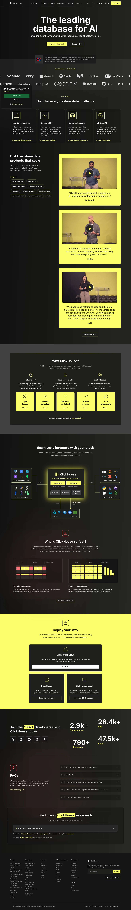

ClickHouse 主题
ClickHouse 的 Design.md 主题展示，围绕开发工具、媒体内容、数据分析、数据仪表盘组织页面。
Fast analytics database. Yellow-accented, technical documentation style.
开发工具媒体内容数据分析数据仪表盘SaaS 产品浅色界面B2B 产品效率工具专业工具

来源
- 来源
- getdesign.md
- 镜像
- github:VoltAgent/awesome-design-md
- 网站
- https://clickhouse.com/
- 详情
- https://getdesign.md/clickhouse/design-md
色板
#0a0a0a: #0a0a0a#121212: #121212#faff69: #faff69#e6eb52: #e6eb52#ffffff: #ffffff#3a3a1f: #3a3a1f#cccccc: #cccccc#e6e6e6: #e6e6e6#888888: #888888#5a5a5a: #5a5a5a#2a2a2a: #2a2a2a#3a3a3a: #3a3a3a
字体
display: Interbody: Intermono: JetBrains Monohints: Inter,JetBrains Mono,ui-monospace,Geist,Roboto
圆角
control: 8pxcard: 12pxpreview: 12pxpill: 9999pxsource: design-md
间距
xxs: 4pxxs: 8pxsm: 12pxmd: 16pxlg: 24pxxl: 32pxxxl: 48pxsection: 96pxsource: design-md
使用建议
建议
- 建议：Anchor every page on the black canvas. The yellow + black pairing is the brand voltage。
- 建议：Reserve {colors.primary} (yellow) for primary CTAs, stat-callout numbers, and full-bleed yellow CTA bands. The yellow's scarcity at the element level + abundance at the band level is what makes it powerful。
- 建议：Use Inter at weight 700 for every display headline, with -1 to -2.5px letter-spacing。
- 建议：Show actual SQL code blocks inside {component.code-window-card} — ClickHouse is a database; show the query, don't paint marketing illustrations of queries。
- 建议：Use {component.stat-callout} numbers to establish credibility (community size, contributors, performance benchmarks). The yellow stat numbers are signature。
避免
- 避免：introduce a second brand color. ClickHouse is monochromatic + yellow。
- 避免：bold display weight beyond 700 or use weight 500 for headlines. The hierarchy depends on size, not on weight gradation。
- 避免：use yellow for body text or large surface fills outside of intentional yellow cards。
- 避免：use rounded buttons / pills outside of small badges. The standard button radius is 8px (md)。
- 避免：repeat the same surface mode in two consecutive bands. Black canvas → dark feature card → yellow CTA card → black canvas → code-window card。
查看 DESIGN.md